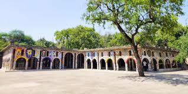

Rock Garden
Rock Garden

Sculpture garden made from industrial and home waste
Rose Garden:
Largest rose garden in Asia, with over 1,600 different species of roses

Sculpture garden made from industrial and home waste
Largest rose garden in Asia, with over 1,600 different species of roses